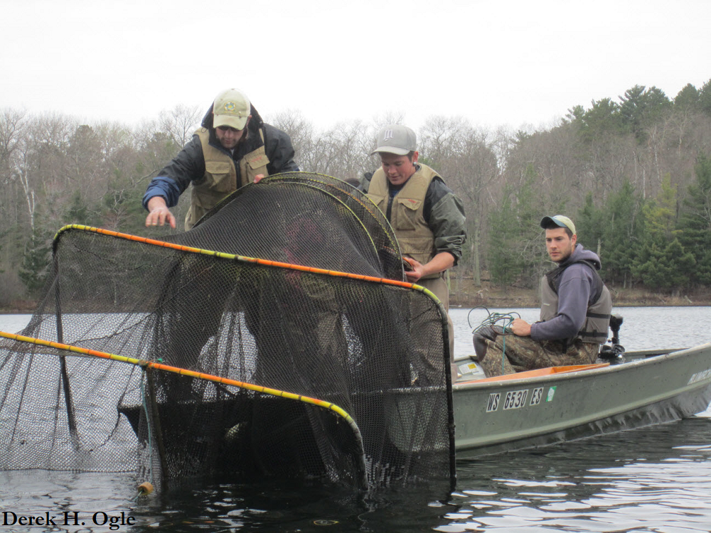

This case was modified from Case 16 by Dr. David Willis from Case Studies in Fisheries Conservation & Management: Applied Critical Thinking & Problem Solving. Much of the text is exactly as it appeared in the original chapter, though slightly rearranged. I also added the R analysis portion
Background
Motivation
Students (and biologists for that matter!) have a tendency to accept sampling data at face value. If a gear type primarily collects small fish then they assume the population is dominated by small fish. If a gear type captures big fish and lots of them then they assume that the population is dominated by large fish. In reality, many biases are possible and are actually very common. To truly understand sampling data, biologists must first understand the biases associated with each gear, and only then will the true nature of the population’s structure (e.g., size or age structure) and dynamics (i.e., recruitment, growth, and mortality) be revealed.
Various sampling gears may be differentially effective for different species, and even differentially effective for different sizes of the same species. For example, Largemouth Bass are commonly sampled with electrofishing gear. The numbers and sizes of Largemouth Bass collected can vary widely across seasons. During the spring and fall, more and larger Largemouth Bass tend to be nearshore and vulnerable to the electrofishing gear, which is used in that shallow-water habitat. During midsummer, fewer Largemouth Bass would be sampled at the same locations because many of the larger bass will have moved offshore to deeper water as a result of the warm summer water temperatures.
In this case study, you will explore the differential size structure of Bluegills captured by two common sampling gears – electrofishing and trap nets (also known as modified fyke nets).

Data
Lake Louise is a 45-ha impoundment located in Hand County, South Dakota. The maximum depth is 6.5 m with a mean depth of 2.7 m. Fish were sampled with trap nets that had 1.2- X 1.5-m frames, dual throats, and 19-mm bar mesh. Night electrofishing was undertaken with pulsed DC electricity at approximately 250 V and 8 A. Samples were collected in late May at a water temperature of 23oC.
Total length of each Bluegill was recorded for fish captured in both gears in LakeLouiseBG.csv. The variables in this data frame are defined as follows,
len: The total length (mm) of the sampled fish.gear: The gear used to capture the fish. Choices areAandB(described later).
Preparation
Prior to beginning this case study you should:
- Read Laarman and Ryckman (1982) and Schultz and Haines (2005).1 Both papers deal with length-related biases for sampling Bluegills (the latter article deals with other species as well). As you read these articles, concentrate on the gear bias for 8-cm and longer Bluegills (Bluegills smaller than this length are not reliably sampled by these gears).
- Be familiar with methods of comparing distributions of fish length.2
- Create a script that reads the CSV file into an object in R and displays the structure and a few rows of the data frame.
1 Both papers are behind a paywall.
2 See Section 6.4.1 of Ogle (2016).
Analysis Questions
Use the collected data to answer the following questions.
- Perform a statistical test to determine if there is a significant difference in the distribution of lengths between the two gears? Use two different types of graphics to visually present your results. Describe any differences you discovered.
- Perform a statistical test to determine if there is a significant difference in mean length between the two gears?
- Identify which gear – trap nets or electrofishing – corresponds to gear
Aand gearB, respectively. Explain your reasoning for your choices. - Explain at least two different conclusions you might have made about this population of Bluegill if you had used one gear exclusively over the other. How might this have impacted a management decision.
Available upon request to students not in a class. Contact fishR maintainers.
Reuse
Citation
@misc{h.ogle2022,
author = {Derek H. Ogle},
title = {Size {Structure} of {Bluegills} {Collected} with {Different}
{Gears}},
date = {2022-12-21},
url = {https://fishr-core-team.github.io/fishR//teaching/posts/2022-12-21_SizeStrux_BGLouise},
langid = {en}
}